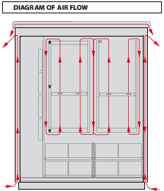
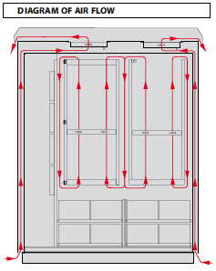

Ventilation with forced internal and free external air circulation
Fan units are mounted inside SZD cabinet in order to shorten time of carrying away heat dissipation emitted by equipment installed in the cabinet. Fan units cause faster air movement inside the cabinet and in the cabinet’s walls. In case of low temperature the system of heaters joint with thermostats is applied. Above solutions enable failure-free operation of access systems. Ventilation with forced internal and external air circulation
In cabinets which are endangered of strong solar radiation, it is recommended to use ventilation with double air circulation. In this solution, air circulates inside the cabinet and additionally flows between the double walls of the cabinet. Moreover, circulation of external air is forced by fan units mounted in the roof. In case of low temperature the system of heaters joint with thermostats is applied. Above solutions enable failure-free operation of access systems. Ventilation based on use of heat exchanger and direct venting
In order to intensify the cooling process in cabinets with installed equipment with high heat dissipation, there is solution based on cross heat exchanger. heat exchanger is a type of radiator, where there are two air flows: warm from the inside of the cabinet (radiator’s plates collect heat) and second from the outside of the cabinet (cooled by exchanger). Cross system of the heat exchanger enables to retain tightness of the cabinet and external and internal air flows do not mix together.Another solution is direct venting of the cabinet, which is used when it is necessary to carry away lots of heat dissipation. In cabinet’s roof or on the door there are mounted fans which pull external air (through double wall and filters system). External air goes through appliances which emit heat and is carried away outside by roof or perforations on the doors.